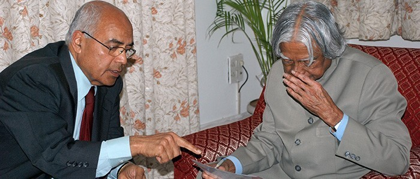

I Create India
I create celebrating 17 years of developing

Like many path-breaking ideas, the origin of I Create was in the unfortunate incidence of riots, police firing on and death of a few unemployed youth trying to enlist for the army during Kargil war. What started as a compassionate act has turned in to a movement for entrepreneurship development for the underprivileged and disadvantaged.
How I Create Came Into Being
One of the founders of I Create, Inc., Harsh Bhargava, was visiting India from the US in 1999. The Kargil war was going on. The army had advertised for 120 positions. There were so many unemployed youth that over one hundred thousand young men showed up for the jobs. A riot broke out, the police opened fire and three young men died - three young men who had come looking for jobs to support their families! The idea of I Create was born in his mind. Harsh and his wife Aruna had lived in the US for over 30 years. Their children were grown. Harsh and Aruna decided to start an organization that would help create jobs and job creators or entrepreneurs through entrepreneurship training.
Coincidentally, as part of Harvard Business School Alumni outreach program, Harsh had volunteered to help NFTE (Network For Teaching Entrepreneurship) with inner city kids in New York. There he met and heard the Founder and President of NFTE, USA, Steve Mariotti, speak. He was so impressed with Steve and his sincere efforts to help disadvantaged youth and NFTE's practical curriculum for teaching entrepreneurship that he felt certain, that the NFTE training would help the disadvantaged Indian youth immensely not only to become entrepreneurs, but also, to acquire employability skills. Rather than reinvent the wheel, Harsh and Aruna decided to take the NFTE program to India. Steve readily agreed. Once in India, they adapted the NFTE program for India. For example, Indian youth needed Indian role models to read about. So Aruna interviewed a large number of Indian entrepreneurs who started from scratch, struggled and became successful. Of these, she selected 12 entrepreneurs and wrote a book called, "Everyday Entrepreneurs: The harbingers of prosperity and creators of jobs." The book has a foreword by Rahul Bajaj, Chairman, Bajaj Group, and has been very successful in its purpose and has gone into its fourth reprint
Originally, Harsh and Aruna had planned to start a small center in Jaipur, their hometown. Even though they both worked pro bono and two rooms in their home were dedicated to I Create free of charge, they needed funds for the staff and programs in India. Jay Misra, a common friend, and a philanthropist, introduced them to Dr. Purnendu Chatterjee (PC), Chairman of TCG (The Chatterjee Group). PC, already committed to the cause of entrepreneurship, enthusiastically lent his generous support for starting I Createcenters in Jaipur and Kolkata. Fortunately for I Create, Sreedhar Menon, Chairman, Viteos Technologies Ltd., joined the I Create Board and has been a consistent and strong pillar of support to the cause.
A couple of years later, Harsh and Aruna met Siraj and Fauzia Bora in New Jersey. After hearing about I Create's work, they and their three friends from Gujarat decided to fund a center in Baroda. A year later they met Vishwa Prakash and his wife Sujata in New York and they offered to fund I Create's center in Bangalore. When Gururaj “Desh” Deshpande and his wife Jaishree heard and learnt about I Create & its mission and vision, they enthusiastically agreed to support a center at Hubli. Thus, with Centers in the East, West, North and South of India I Create has emerged as a national Integrated Entrepreneurship Training organization with Empowerment of the Disadvantaged and Creating job Creators as its mission.
These were the early beginnings of I Create. Since then, a very large number of organizations have joined hands and many more joining each year.
I Create has designed programs appropriate for the two streams of implementation. Creating Job Creators helps members of different disadvantaged groups and others at the bottom of the pyramid to learn about starting the business and motivates them to become entrepreneurs.
One of the most challenging program ‘’Changing the Mindset: Entrepreneurship as a career option” provides the youth In educational institutions with basic understanding of entrepreneurship and encourages them to consider entrepreneurship as a viable career option.
I Create is partnered with NFTE (Network For Teaching Entrepreneurship) of USA in developing the country appropriate program and teaching methodology- for India. The programme has been developed keeping in the landscape of disadvantaged, urban and rural members of our society in mind- their educational levels, fluency or lack of in English and other socio economic factors
Each of our I Create Centers works closely with the partner organizations (NGOs, Vocational institutions, Colleges, Self help Groups and other disadvantaged members) and based on the profile of the beneficiaries and discussions with partner organizations we conduct some or all of the following program
Entrepreneurship Awareness Programme(EAP)Aspiring Entrepreneurs Workshop Changing the mindset (CMS) :program for the youth: 40 period School/College program for the youth Business plan competitions
Entrepreneur Awareness Programme (EAP)
This is a half day to one day programme. The purpose is to create awareness among the youth and women about entrepreneurship being an option and an alternative to job seeking for economic empowerment. This course is conducted by Master trainers from the centers and very often is part of the intake process for the Aspiring Entrepreneurs Workshop or 40 day program. In certain situations, where the target group is already identified as potential beneficiaries of the AEW, the EAP may not be necessary
Aspiring Entrepreneurs Workshop (AEW)
This is the flagship program delivered by the Master Trainers to ultimate beneficiaries. Master Trainers are provided with the teaching manuals for use in this program. Currently we have them in English, Bengali, Hindi, Gujarati, and Kannada and now in Marathi. At the end of the workshop, the participants are required to present a business plan (individually or as a member of the team)
Approximately 30 to 45 days after the AEW, Master Trainers conduct a Follow- up session. The purpose of such a session is to reinforce certain concepts, clarify doubts and identify candidates who would be mentored by the MTs.
Program for Youth – a 40 Period Program in Schools and Colleges
The course content and teaching methodology is similar to that of AEW. However, the teaching is spread over 40 periods (six to 8 weeks) the teachers who have been trained as Master Trainers by I Create conduct this session. Very often there is a regional and national level business plan competition with the resultant recognition, awards etc.
Business Plan Competitions
These have proved to be a great learning experience since the youth have prepared the business plans based on what they have learned. It is the most exciting part of the learning/ training
TOT sessions are conducted by highly qualified and accredited trainers from both India and abroad. The training is conducted in English, Hindi, Bengali, Kannada, Gujarati, Marathi, Konkani and in African languages as of now. Training manuals are available in all these languages.
Training of Trainers (TOT)
A four to five day program.-The focus is on training the trainers in the methodology and course of I Create imparting training in the three other program(EAP, AEW and 40 period). The participants are in a position to conduct the trainings as per I Create using the methodology imparted and the Teaching manuals provided during the session. The participants are certified as I Create Master Trainers(MT's) and become members of the pool from whom I Create draws upon to conduct various program
As part of our ongoing training of the MT's, I Create conducts a one day intensive workshop with the existing MTs to freshen up both their training and methodology skills. This is done once a year and may take place even earlier for those MT's that have finished their first TOT
Potential entrepreneurs as well as entrepreneurs running businesses need the assistance of mentors, to build a robust and successful business while fine-tuning their business plans. Once they start working on their Business Plans they are mentored by I Create Mentors in developing their idea further and reach the stage of preparing a viable and implementable Business Plan. This is done one-on-one basis.
Once the Business idea becomes a viable Business plan, financial linkages are provided. On successfully receiving the financial assistance from institutions the beneficiary/participants’ idea hits the market. This is when the real practical challenges begin. At this stage I Create sets in to handhold the beneficiary to overcome these challenges. This service is provided for a period of 3 to 6 months wherein guidance regarding maintaining simple yet critical books of accounts viz., cash-book, sales register, purchase book, inventory register etc. is given.
Ministry of Skill Development and Entrepreneurship (MSDE), Government of India, through NIESBUD (National Institute for Entrepreneurship and Small Business Development) has entered in to an MOU with I Create to “Provide Entrepreneurship Education and Training to promote a culture of entrepreneurship across the country and provide end-to-end handholding support to potential entrepreneurs for setting up enterprises & provide necessary mentoring support to them afterwards if so desired”. Further, the Ministry has approved establishing a Business Incubation Center (BIC) at Bangalore, co-branded as NIESBUD- I Create incubation center. Accordingly, I Create operates NICBIC (NIESBUD I Create Business Incubation Center) at Bangalore.
NICBIC provides facilities such as providing guidance and information both for aspiring and current entrepreneurs to formulate their business plans, various banking schemes for funding the enterprise etc.
Access to capital is one of the crucial aspects of Entrepreneurship Development. To start an enterprise one certainly needs to have an idea that is technically feasible and commercially viable. After ascertaining that idea is both feasible and viable, aspiring entrepreneurs work on and develop their Business Plan and start their quest for capital
This is when most of them get frustrated. There are many government schemes (both state and central) but the bureaucracy is daunting to these people. Micro Finance Institutions are willing to lend money; but their interest rates and structure are usurious when compared to the rate of return the micro enterprises can hope to achieve. With these options of access to capital, the aspiring entrepreneurs hit a brick wall and slowly lose their confidence and desire to start a micro enterprise.
Need, therefore, exists for a hassle free and low cost alternative of providing access to capital to the aspiring entrepreneurs who have a viable business plan and an implementation strategy
I Create India has created a revolving seed capital assistance fund – known as MAGIC (Mentor and Angel Group of I Create) – to assist budding entrepreneurs at grassroots level with returnable financial assistance. This has been possible through the generous contributions of many real Angels. We hope to attract more of them and keep the fund growing.
MAGIC (Mentor and Angel Group of I Create) Fund is a donation based seed capital assistance fund. This fund has been created by I Create India through the generous contributions of many individuals and organizations. The focus is on providing hassle free and low cost access to capital to the aspiring entrepreneurs who have been trained by I Create and who have a viable business plan and an implementation strategy.
As the corpus of the MAGIC fund is created through donations, we are able to provide assistance without charging any interest. The recipients of the assistance are required to pay back the amount received as assistance as per agreed repayment plan together with a small service fee to take care of collection efforts and other related expenses.
Donations are utilized for providing seed capital assistance and not for meeting overhead expenses.
Corpus of the MAGIC Fund is operated by I Create India. It follows a very transparent process for disbursement and collection of assistance. Briefly:
We gratefully acknowledge the generous contributions of the following individuals and organizations. Because of their contributions we have been able to create a corpus of Rs.16 lakhs as of December 2015. The contributors are listed alphabetically here
Who are Beneficiaries?
Here we will upload individual beneficiaries PDF
Here we will upload individual beneficiaries PDF
KOLAR - Here we will upload individual beneficiaries PDF
BDSSS, Khanapur - Here we will upload individual beneficiaries PDF
BDSSS, Dharwad - Here we will upload individual beneficiaries PDF
Join us to Create MAGIC?
Donors in India
Your contribution would be eligible to receive exemption under section 80 (G) of Income Tax Act in India. You may send your contributions by cheque drawn in favor of I Create India Angel Fund and mail it to
I Create India,
433, 8th Main,
Vijayanagar,
Bangalore 40.
Email: Info@icreateindia.org
Or transfer to our account:
I CREATE ANGEL FUND CORPUS
Account Number: 03121450000287
Name of the Bank: HDFC Bank, Vijayanagar Branch
Bangalore 560 040.
IFSC: HDFC0000312
Donors in the US and other countries outside India:
Please send your check to:
I Create Inc
41, Andover Drive,
Kendall Park,
NJ 08824
USA
All US donations to I Create Inc are fully tax deductible since I Create Inc is 501 (C ) 3, nonprofit organization.
Thank you very much.
| I Create India | I Create Inc |
| #433, 1st floor, 8th main, | Global HQ, Washington, DC, USA |
| Vijayanagar Bangalore- 560040 | Phone : +703 893 4751 |
| Phone : +91- 80 - 2340 9990 | E-mail : icreateinc@gmail.com |
| E-mail : icreateindia@gmail.com |